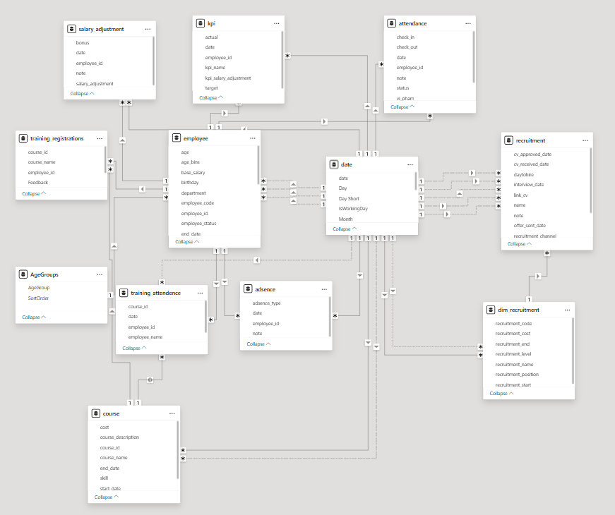

Báo cáo Quản trị nhân sự
1. Tổng Quan
Dự án xây dựng hệ thống báo cáo quản trị nhân sự trên Power BI, với dữ liệu được lưu trữ và nhập liệu qua SharePoint List. Báo cáo giúp doanh nghiệp theo dõi và phân tích các khía cạnh quan trọng về nhân sự, hỗ trợ ra quyết định hiệu quả.
2. Dataset
Dữ liệu nhân sự bao gồm:
- Thông tin nhân sự: Hồ sơ nhân viên, phòng ban, vị trí, nhân khẩu học
- Chấm công: Lịch làm việc, nghỉ phép, vi phạm quy tắc
- Lương & KPI: Mức lương, hiệu suất theo phòng ban/vị trí
- Tuyển dụng: Quá trình tuyển dụng, tỷ lệ chấp nhận offer, chi phí tuyển dụng
- Đào tạo: Danh sách khóa đào tạo, tỷ lệ tham gia, kết quả học tập
Data Schema Power BI
3. Dashboard
Hệ thống báo cáo gồm các phần chính:
- Báo cáo tổng quan: Tổng hợp số lượng nhân sự, phân tích nhân khẩu học.
- Tra cứu thông tin: Tìm kiếm nhanh thông tin cá nhân, quá trình công tác, KPI.
- Chấm công: Theo dõi hoạt động chấm công, vi phạm và nghỉ phép
- Tuyển dụng: Theo dõi từng giai đoạn tuyển dụng, tỷ lệ nhận offer, chi phí
- Đào tạo: Tổng quan các khóa học, tỷ lệ tham gia và kết quả đào tạo